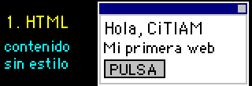
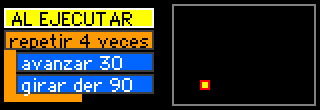
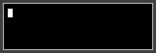
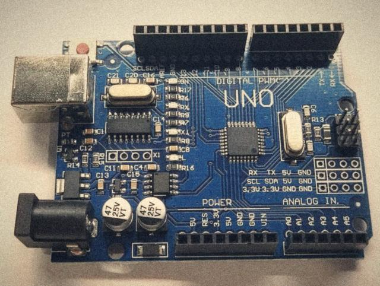

¿Qué vas a construir?
Vas a aprender cómo se conectan las tres piezas que ya usa CiTIAM Labs. Mira el menú gris, las tarjetas negras y los botones: HTML define qué elementos hay, CSS les da aspecto y JavaScript hace que respondan. No tienes que memorizar todo: escribe una versión pequeña, pruébala y cambia una cosa a la vez.

- Abre la carpeta del sitio en un editor de código, como Visual Studio Code.
- Abre
index.htmlen el navegador para ver el resultado actual. - Cuando termines un cambio, guarda el archivo y recarga el navegador.
Idea importante: los nombres de archivos y rutas deben coincidir exactamente. Por ejemplo, assets/css/style.css indica que el archivo está dentro de assets, luego css. El único HTML en la carpeta principal es index.html; las demás páginas están en pages.
¿Nunca has programado? Empieza con bloques

En el taller de bloques armas programas sin preocuparte por las comas ni las llaves, y a un lado ves el mismo programa escrito en JavaScript. Es una buena forma de entender primero las ideas: secuencias, ciclos, condiciones y variables.
ABRIR EL TALLER DE BLOQUESEl truco de 1998: ver el código fuente
Toda página web trae su receta a la vista. En una computadora, haz clic derecho sobre esta página y elige Ver código fuente, o pulsa Ctrl+U en Windows. En Chrome para Mac es Opción+Cmd+U.
Dejamos comentarios para ti al principio de cada archivo y antes de cada parte difícil. Un comentario es una nota para las personas: el navegador no la muestra. Así se escriben en cada lenguaje:
<!-- comentario en HTML -->
/* comentario en CSS y en JavaScript */
// comentario de una línea en JavaScript
1. HTML: organiza el contenido
HTML describe el significado de cada parte. Un título usa <h1>, un párrafo usa <p> y un enlace usa <a>. La mayoría tiene apertura y cierre. La estructura de esta misma página empieza así:
<header class="masthead">
<h1>CiTIAM Labs</h1>
<p class="subtitle">Un laboratorio para aprender</p>
</header>
<section class="article-card">
<h2>Un proyecto nuevo</h2>
<p>Aquí contamos qué queremos investigar.</p>
</section><header> agrupa la cabecera; <section> agrupa un tema; class le pone un nombre que CSS puede reutilizar. Para añadir una tarjeta a CiTIAM, duplica una sección, cambia sus títulos y texto, y guarda. Usa etiquetas según su propósito y no saltes de título solo por su tamaño.
Enlaces e imágenes
<a href="proyectos.html">Ver proyectos</a>
<img src="../assets/images/jardin-del-club.jpg"
alt="El jardín escolar de CiTIAM">href señala a dónde va un enlace, src señala dónde está la imagen y alt describe la imagen para quien no puede verla. Las rutas relativas parten de la carpeta del archivo HTML. Por eso esta página, que vive en la carpeta pages, escribe ../ para subir una carpeta y llegar a assets. La portada, index.html, no lo necesita: está junto a assets.
2. CSS: diseña la página
CSS selecciona elementos y define sus propiedades. En el sitio, .article-card selecciona las secciones que tienen class="article-card"; el punto significa “clase”. Este es un ejemplo inspirado en las tarjetas negras de CiTIAM:
.article-card {
padding: 14px;
border: 2px ridge #555;
background: #050505;
color: white;
}
.article-card h2 {
color: cyan;
}Una regla contiene un selector y propiedades entre llaves. padding crea espacio interior, border dibuja un borde y background cambia el fondo. El archivo compartido por todas las páginas es assets/css/style.css.
Hazlo adaptable
El diseño de CiTIAM usa una cuadrícula y cambia a una columna en pantallas pequeñas. Las reglas @media permiten cambiar estilos según el ancho. Prueba abrir el sitio en un teléfono y no elimines estas reglas al editar.
@media (max-width: 700px) {
.columns {
grid-template-columns: 1fr;
}
}3. JavaScript: agrega acciones
JavaScript encuentra elementos HTML y reacciona a eventos. En la portada, el botón de ideas tiene id="idea-button"; el programa escucha cuando alguien hace clic y cambia el texto de una pregunta.
const boton = document.querySelector("#idea-button");
const mensaje = document.querySelector("#idea-prompt");
boton.addEventListener("click", () => {
mensaje.textContent = "¿Cómo cambia la sombra durante el día?";
});querySelector busca el primer elemento que coincide con el selector. El símbolo # busca un id. addEventListener conecta el clic con una función, y textContent cambia el texto de forma segura.
Conecta las piezas: si cambias el id en HTML, actualiza también el selector en JavaScript. Revisa la consola del navegador si un botón deja de responder.
Taller interactivo: escribe, ejecuta y observa
Modifica los tres cuadros y pulsa PROBAR MI PÁGINA. El primero acepta HTML, el segundo CSS y el tercero JavaScript. Empieza cambiando el título, el color o el mensaje del botón. La vista previa está aislada del resto del sitio.
El código se ejecuta solo en la vista previa de abajo. No introduzcas datos personales.
La vista previa está lista.
Prueba estos cambios
- Cambia el título dentro de
<h1>y vuelve a probar. - Cambia
yellowpormagentaen CSS. - Cambia el texto que está entre comillas en
textContent. - Quita una llave o una comilla del JavaScript a propósito. Arriba de la vista previa aparecerá un aviso con el error; léelo y corrígelo.
4. Prueba y comparte tu sitio
- Guarda tus archivos con nombres claros: HTML para el contenido, CSS para el diseño y JavaScript para las acciones.
- Abre la página localmente y prueba todos los enlaces, botones e imágenes.
- Comprueba que se vea en pantalla pequeña. Corrige cualquier desbordamiento.
- Si vas a publicar, pide a tu docente que revise los permisos de las imágenes y que no haya información personal.
- GitHub Pages puede publicar un sitio estático. Consulta la guía para ver los pasos y pide ayuda a una persona adulta.
Cuando algo falle, revisa primero la ruta del archivo, los nombres de id y la consola del navegador. Cambia una cosa por vez y vuelve a probar.
¿Y después de la web?

Las ideas que aprendes aquí sirven en otros lugares. Un botón que espera un clic se parece a un robot que espera la lectura de un sensor: en los dos casos, un programa recibe una señal y decide qué hacer.
Por eso los robots del club y esta página tienen algo en común. Los lenguajes pueden ser distintos, pero variables, condiciones y funciones aparecen casi en todos. Visita la sección de robótica para verlo.
Más recursos para seguir aprendiendo
Estos recursos gratuitos explican conceptos y ofrecen prácticas. Algunas páginas están en inglés; trabaja con una persona docente si necesitas ayuda para elegir una actividad.
- MDN: Aprende desarrollo web — guías de HTML, CSS y JavaScript con ejemplos.
- MDN: HTML — elementos, atributos y estructura semántica.
- MDN: CSS — selectores, colores, diseño y adaptación a pantallas.
- MDN: JavaScript — variables, funciones, eventos y el navegador.
- W3Schools — ejemplos interactivos para practicar fundamentos.
Ruta sugerida: empieza por HTML, practica estilos sencillos con CSS y después agrega interacciones con JavaScript. Regresa a las páginas de CiTIAM para encontrar ideas de contenido.